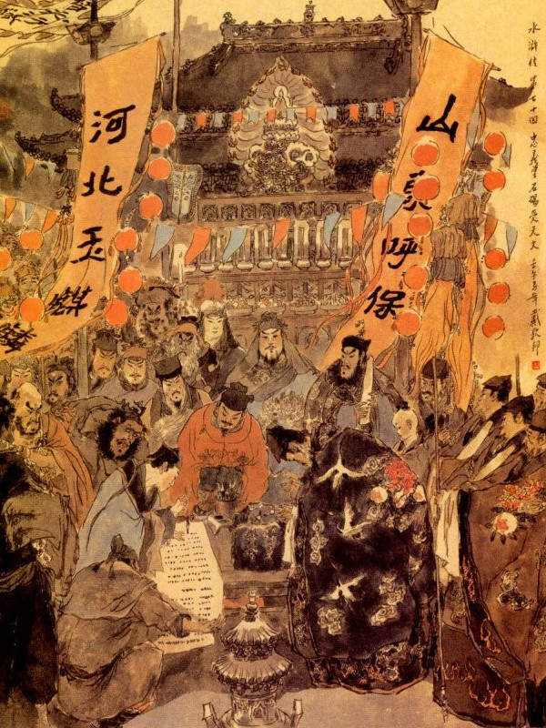

Bấy giờ Tống Giang bảo với các Đầu Lĩnh rằng:
- Lũ anh em ta bấy lâu vào sinh ra tử, mong mỏi tìm nhau, để kết lấy giang hồ đại nghĩa, vậy ngày nay đã sum họp tất cả được một trăm lẻ tám anh em, trí dũng kim toàn, anh tài không thiếu, thực là một cơ hội rất hiếm xưa nay, ai trông thấy thế mà chẳng đồng tâm hiệp lực, để cùng liên lạc với nhau. Duy trong khi gây cuộc binh đao, kể cũng thiệt hại đến nhiều dân chúng. Vậy ngày nay muốn lập đàn trai để tạ ơn trời đất quỷ thần, một là cầu đảo cho anh em được vui vẻ yên lành, hai là mong triều đình sớm ra ơn xá tội để cùng nhau hết sức báo đền non nước thì dẫu chết cũng không dám từ nan, ba là cầu cho Tiều Thiên Vương sớm thăng thiên giới thế thế sinh sinh rồi sau lại được gặp nhau và nhân tiện cầu nguyện cho các linh hồn bị chết chóc từ trước tới nay, đều được siêu sinh tĩnh thổ về chốn lạc viên. Chẳng hay ý tưởng anh em nghĩ ra sao?
Các Đầu Lĩnh nghe nói đều đáp rằng:
- Đó là một công quả phúc đức, anh em đều xin theo ý kiến Ca Ca chỉ giáo.
Ngô Dụng nói:
- Việc này tất phải nhờ Công Tôn Thắng tiên sinh làm chủ rồi cho người đi đón đạo sĩ các nơi để về cúng mới được.
Nói đoạn liền bàn định đến rằm tháng tư bắt đầu làm chay, hạn bảy đêm ngày công quả cho các người đi đón các Đạo Tràng về cúng và sai người mua sắm lễ vật cùng là bày dọn Đạo Tràng. Trước Trung Nghĩa Đường dựng cây phàn lớn, bốn xung quanh kết ba từng đài rất cao, trong bày thánh trượng Tam Thanh, Thất Bảo, hai ban đặt thờ hai mươi tám vì tinh tú, mười hai ngôi sao giờ cùng các tinh chủ trên trời và phía ngoài đặt giám đàn thờ thần tướng Thôi, Lưu Trung Thư, Đặng, Đậu.
Hôm ấy khi trời trong trẻo, gió mát trăng thanh, đàn tràng đã lập xong rồi. Công Tôn Thắng liền dẫn tất cả bốn mươi tám người đạo tràng ra làm lễ. Bấy giờ Tống Giang, Lư Tuấn Nghĩa đứng đầu rồi đến Ngô Dụng cùng các Đầu Lĩnh ra đốt hương coi lễ.
Công Tôn Thắng chủ việc đàn tràng, coi giữ các giấy sớ ấn bùa và cùng bốn mươi tám người đạo tràng, cùng nhau mỗi ngày ra làm lễ ba khoá lễ.
Tống Giang nhất tâm cầu nguyện, mong Hoàng Thiên báo ứng hiển nhiên, liền bảo Công Tôn Thắng đốt sớ tâu lên Thượng Đế. Đến đêm hôm thứ bảy, Công Tôn Thắng ở trên tấng đàn Hư Hoàng thứ nhất, các đạo tràng ở tầng thứ hai, Tống Giang cùng các Đầu Lĩnh ở tầng thứ ba, còn các tiểu Đầu Lĩnh cùng bọn tướng tá, đều đứng cả dưới đàn mà cùng nhau vái lạy trời xanh, cầu xem báo ứng.
Được một lát vào khoảng canh ba, chợt nghe thấy trên trời có một tiếng soạt, như tiếng xé lụa rất to rồi thấy cửa trời về phía Tây Bắc Kiền phương mở tung ra và có một cái ban vàng, hai đầu nhỏ ở giữa rộng trông như mặt trời chói lọi, sáng rực xuống khắp trần ai. Chợt lại thấy trong đàn, có một khối lửa to như cái thúng, lừ đừ đi xuống đàn Hư Hoàng, quanh chuyển một vòng rồi lặn xuống dưới đất, về phía chính Nam. Đoạn rồi mặt trời trở lại như cũ rồi mọi người cùng nhau lạy tạ xuống đàn mà đào đất để tìm.
Khi đào tới ba thước đất, chợt thấy có một miếng bia đá, chạm thiên thư ở mặt giữa và cả đôi bên. Tống Giang sai đem về làm lễ tạ đàn rồi sáng hôm sau đưa tiền công quả để tặng cho các đạo tràng và đem bia đá ra xem. Khi nom đến bia đá thấy chữ nghĩa ngoằn ngoèo, khác hẳn lối thường, không còn ai biết nghĩa lý ra sao cả. Sau có một người đạo tràng, họ Hà tên là Diệu Thông, nói với Tống Giang rằng:
- Tổ phụ nhà tôi khi xưa có một bộ sách, chuyên để cắt nghĩa các lối chữ thiên thư, vậy lối chữ đây tức là lối chữ khoa đẩu, tôi có thể hiểu được, xin ngài để cho tôi dịch giúp.
Tống Giang nghe nói cả mừng, liền nhờ Hà Diệu Thông xem giúp và dịch cho mọi người cùng hiểu nghĩa. Hà Diệu Thông xem một lúc rồi nói với Tống Giang rằng:
- Hai bên cạnh bia, một bên có bốn chữ "Thế Thiên Hành Đạo" (Thay Trời làm Đạo) và một bên có bốn chữ "Trung Nghĩa Lưỡng Toàn" (trung nghĩa vẹn hai), trên có các vì sao trên trời và phía dưới chưa đủ tên họ các ngài ở đó. Nếu các ngài rộng tha phép cho, tôi xin viết rõ ra để các ngài xem.
Tống Giang nói:
- Chúng tôi mê muội không biết văn trời, nay nếu được Đạo Sĩ chỉ bảo đường mê thì còn gì hơn nữa, dám xin Đạo Sĩ chỉ bảo rõ ràng cho biết, hoặc giả ở trong có điều chi Hoàng Thiên quở phạt cũng xin chớ dấu chúng tôi.
Nói đoạn liền gọi Thánh Thủ Thư Sinh Tiêu Nhượng lấy giấy vàng mực đen ra để Hà Diệu Thông đọc cho viết.

Hà Diệu Thông lại nói rằng:
- Trong tấm bia này, trước mặt có ba mươi sáu hàng chữ toàn thị là sao Thiên Cương, mặt sau có bảy mươi hai hàng chữ toàn thị là sao Địa Sát, phía dưới có chứa tên họ các nghĩa sĩ ở đây cả.
Nói đoạn liền đọc ba mươi sáu hàng chữ ở trước mặt bia:
Thiên Khôi Tinh, Hô Bảo Nghĩa Tống Giang
Thiên Cương Tinh, Ngọc Kỳ Lân Lư Tuấn Nghĩa
Thiên Cơ Tinh, Trí Đa Tinh Ngô Dụng
Thiên Nhàn Tinh, Nhập Long Vân Công Tôn Thắng
Thiên Dũng Tinh, Đại Đao Quan Thắng
Thiên Hùng Tinh, Báo Tử Đầu Lâm Xung
Thiên Mãnh Tinh, Tích Lịch Hoả Tần Minh
Thiên Uy Tinh, Song Chiên Hô Diên Chước
Thiên Anh Tinh, Tiểu Lý Quảng Hoa Vinh
Thiên Quý Tinh, Tiểu Toàn Phong Sài Tiến
Thiên Phú Tinh, Phác Thiên Bằng Lý Ứng
Thiên Mãn Tinh, Mỹ Nhiêm Công Chu Đồng
Thiên Cô Tinh, Hoa Hoà Thượng Lỗ Trí Thâm
Thiên Thương Tinh, Hành Giả Võ Tòng
Thiên Lập Tinh, Song Thương Tướng Đổng Bình
Thiên Tiệp Tinh, Một Vũ Tiễn Trương Thanh
Thiên Âm Tinh, Thanh Diện Thú Dương Chí
Thiên Hựu Tinh, Kim Sang Thủ Từ Ninh
Thiên Không Tinh, Cấp Tiên Phong Sách Siêu
Thiên Dị Tinh, Xích Phát Quỷ Lưu Đường
Thiên Sát Tinh, Hắc Toàn Phong Lý Quỳ
Thiên Tốc Tinh, Thần Hành Thái Bảo Đới Tung
Thiên Vi Tinh, Cửu Văn Long Sử Tiến
Thiên Cứu Tinh, Mộc Già Lan Mục Hoằng
Thiên Thoái Tinh, Sáp Sí Hổ Lôi Hoành
Thiên Thọ Tinh, Hỗn Giang Long Lý Tuấn
Thiên Kiếm Tinh, Lập Địa Thái Tuế Nguyễn Tiểu Nhị
Thiên Bình Tinh, Thuyền Đầu Hoả Trương Hoành
Thiên Tội Tinh, Đoản Mệnh Nhị Lang Nguyễn Tiểu Ngũ
Thiên Tổn Tinh, Lãng Lý Bạch Điều Trương Thuận
Thiên Bại Tinh, Hoạt Diêm La Nguyễn Tiểu Thất
Thiên Lao Tinh, Bệnh Quan Sách Dương Hùng
Thiên Tuệ Tinh, Biểu Mệnh Tam Lang Thạch Tú
Thiên Bảo Tinh, Lưỡng Đầu Xà Giải Trân
Thiên Khốc Tinh, Long Vĩ Hạt Giải Bảo
Thiên Xảo Tinh, Lãng Tử Yến Thanh
Bảy mươi hàng chữ mặt sau bia:
Địa Khôi Tinh, Thần Cơ Quân Sư Chu Vũ
Địa Sát Tinh, Trấn Tam Sơn Hoàng Tín
Địa Dũng Tinh, Bệnh Úy Trì Tôn Lập
Địa Kiệt Tinh, Xú Quận Mã Tuyên Tán
Địa Hùng Tinh, Mộc Tỉnh Can Hắc Tư Văn
Địa Uy Tinh, Bách Thắng Tướng Hàn Thao
Địa Anh Tinh, Thiên Mục Tướng Bành Dĩ
Địa Kỳ Tinh, Thánh Thủy Tướng Quân Đan Đình Khuê
Địa Mãnh Tinh, Thần Hoả Tướng Quân Ngụy Định Quốc
Địa Văn Tinh, Thánh Thủ Thư Sinh Tiêu Nhượng
Địa Chính Tinh, Thiết Diện Khổng Mục Bùi Tuyên
Địa Tịch Tinh, Ma Vân Kim Sí Âu Bằng
Địa Hạp Tinh, Hoả Nhỡn Toan Nghê Đặng Phi
Địa Cường Tinh, Cẩm Mao Hổ Yến Thuận
Địa Âm Tinh, Cẩm Báo Tử Dương Lâm
Địa Phụ Tinh, Oanh Thiên Lôi Lăng Chấn
Địa Hội Tinh, Thần Toán Tử Tưởng Kính
Địa Tá Tinh, Tiểu Ôn Hầu Lã Phương
Địa Hựu Tinh, Kiển Nhân Quý Quách Thịnh
Địa Linh Tinh, Thần Y An Đạo Toàn
Địa Thú Tinh, Tử Nhiêm Bá Hoàng Phủ Đoan
Địa Vi Tinh, Nụy Cước Hổ Vương Anh
Địa Tuệ Tinh, Nhất Trượng Thanh Hổ Tam Nương
Địa Hao Tinh, Táng Môn Thần Đào Húc
Địa Mặc Tinh, Hỗn Thế Ma Vương Phàn Thụy
Địa Xương Tinh, Mao Đẩu Tinh Khổng Minh
Địa Cường Tinh, Độc Hoả Tinh Khổng Lượng
Địa Phi Tinh, Bát Tý Na Tra Hạng Sung
Địa Tẩu Tinh, Phi Thiên Đại Thánh Lý Cổn
Địa Xảo Tinh, Ngọc Tý Tượng Kim Đại Kiện
Địa Minh Tinh, Thiết Dịch Tiên Mã Lân
Địa Tiến Tinh, Xuất Động Giao Đồng Uy
Địa Thoái Tinh, Phan Giang Thần Đồng Mãnh
Địa Mãn Tinh, Ngọc Phan Cang Mạnh Khang
Địa Toại Tinh, Thông Tý Viện Hầu Kiện
Địa Chu Tinh, Khiêu Giản Hổ Trần Đạt
Địa An Tinh, Bạch Hoa Xà Dương Xuân
Địa Di Tinh, Bạch Diện Lang Quân Trịnh Thiên Thọ
Địa Lý Tinh, Cửu Vỹ Quy Đào Tôn Vượng
Địa Tuấn Tinh, Thiết Phiến Tử Tống Thanh
Địa Nhạc Tinh, Thiết Khiếu Tử Nhạc Hoà
Địa Tiệp Tinh, Hoa Hạng Hổ Cung Vượng
Địa Tốc Tinh, Tùng Tiến Hổ Đinh Đắc Tôn
Địa Trấn Tinh, Tiểu Già Lan Mục Xuân
Địa Cơ Tinh, Thao Đao Quỷ Tào Chính
Địa Ma Tinh, Vạn Lý Kim Cương Tống Vạn
Địa Yêu Tinh, Mô Trước Thiên Đỗ Thiên
Địa U Tinh, Bệnh Đại Trùng Tiết Vĩnh
Địa Phục Tinh, Kim Nhỡn Bưu Thi Ân
Địa Tịch Tinh, Đả Hổ Tướng Lý Trung
Địa Không Tinh, Tiểu Bá Vương Chu Thông
Địa Cô Tinh, Kim Tiền Báo Tử Thang Long
Địa Toàn Tinh, Quỷ Kiểm Nhi Đỗ Hưng
Địa Đoản Tinh, Xuất Lâm Long Trâu Uyên
Địa Giốc Tinh, Độc Giốc Long Trâu Nhuận
Địa Tù Tinh, Hãn Địa Hốt Luật Chu Quý
Địa Tàng Tinh, Tiếu Diện Hổ Chu Phú
Địa Binh Tinh, Thiết Tý Phụ Xái Phúc
Địa Tổn Tinh, Nhất Chi Hoa Xái Khánh
Địa Nô Tinh, Thôi Mệnh Phán Quan Lý Lập
Địa Sát Tinh, Thanh Nhỡn Hổ Lý Lân
Địa Ác Tinh, Một Diện Mục Tiêu Đĩnh
Địa Xú Tinh, Thạch Tướng Quân Thạch Dũng
Địa Số Tinh, Tiểu Uất Trì Tôn Tân
Địa Âm Tinh, Mẫu Đại Trùng Cố Đại Tẩu
Địa Hình Tinh, Thái Viên Tử Trương Thanh
Địa Tráng Tinh, Mẫu Dạ Xoa Tôn Nhị Nương
Địa Liệt Tinh, Hoạt Diêm La Vương Đình Lục
Địa Kiện Tinh, Hiểm Đạo Thần Úc Bảo Tứ
Địa Hao Tinh, Bạch Nhật Tử Bạch Thắng
Địa Tặc Tinh, Cổ Thượng Tao Thời Thiên
Địa Cẩu Tinh, Kim Mao Khuyển Đoàn Cảnh Trụ.
Tiêu Nhượng viết xong tất cả rồi đọc lại một lượt cho mọi người ai nấy đều kinh ngạc vô cùng. Tống Giang liền nói với các Đầu Lĩnh rằng:
- Tôi là kẻ tiểu lại ngu hèn, ngờ đâu lại ứng vào các tinh tú trên trời, cùng với anh em lại cùng chung một hội. Nay số trời đã định, tất phải xum họp cùng nhau, vậy anh em ta phải y theo thứ tự, giữ lấy bổn phận mà làm, chớ nên trái ý trời mới được.
Các Đầu Lĩnh nghe nói đều đáp rằng:
- Ý Trời đã định, còn ai dám cãi, từ nay đều xin nhất lực nhất tâm.
Tống Giang sai lấy năm mươi lạng vàng, tạ ơn Hà Diệu Thông. Hà Diệu Thông bèn bái tạ Tống Giang, cùng các vị Đầu Lĩnh rồi cùng với bọn đạo tràng xuống núi mà chia tay trở về.
Bấy giờ Tống Giang bàn với Quân Sư Ngô Dụng, cùng các Đầu Lĩnh để chỉnh đốn lại trong sơn trại; Trước Trung Nghĩa Đường khắc một cái biển vàng đề ba chữ "Trung Nghĩa Đường "rất to. Đoạn kim đình cũng thay một bức biển lớn. Phía trước đặt ba cửa quan. Phía sau Trung Nghĩa Đường, lập một toà Nhạn Đài. Đỉnh núi đặt một đại sảnh, phía Đông phía Tây đều có ngăn phòng, chính giữa đặt một bàn thờ Tiều Cái.
Tống Giang, Ngô Dụng, Lã Phương, Quách Thịnh ở phòng bên Đông; Lư Tuấn Nghĩa, Công Tôn Thắng, Khổng Minh, Khổng Lượng ở phòng bên Tây.
Lớp núi thứ hai có Chu Vũ, Hoàng Tín, Tôn Lập, Tiêu Nhượng, Bùi Tuyên ở phòng bên tả; và Đới Tung, Yến Thanh, Trương Thanh, An Đạo Toàn, Hoàng Phủ Đoan ở dẫy bên hữu. Bên tả Trung Nghĩa Đường có Sài Tiến, Lý Ứng, Tưởng Kính, Lăng Chấn coi giữ việc thu phát tiền lương kho tàng và bên hữu thì có Hoa Vinh, Phàn Thụy, Hạng Sung và Lý Cổn.
Cửa quan đệ nhất đường bên Nam trước núi, cắt Giải Trân, Giải Bảo coi giữ. Cửa Quan thứ nhì Lỗ Trí Thâm, Võ Tòng coi giữ. Cửa quan thứ ba Chu Đồng, Lôi Hoành coi giữ.
Bên Đông núi một cửa quan, Sử Tiến, Lưu Đường coi giữ. Bên Tây một cửa quan, Dương Hùng, Thạch Tú coi giữ. Bên bắc một cửa quan Mục Hoằng, Lý Quỳ coi giữ.
Ngoài sáu cửa quan lại đặt thêm tám trại, bốn trại trên bộ và bốn trại dưới nước. Trại bộ chính Nam có Tần Minh, Sách Siêu, Âu Bằng, Đặng Phi. Trại Chính Đông có Quan Thắng, Từ Ninh, Tuyên Tán, Hắc Tư Văn; Trại chính Tây có Lâm Xung, Đổng Bình, Đan Đình Khuê, Ngụy Định Quốc. Trại Chính Bắc có Hô Diên Chước, Dương Chí, Hàn Thao, Bành Dĩ; Trại thủy bên Đông Nam có Lý Tuấn, Nguyễn Tiểu Nhị; Trại Tây Nam có Trương Hoành, Trương Thuận; Trại Đông Bắc có Nguyễn Tiểu Ngũ, Đồng Uy; Trại Tây Bắc có Nguyễn Tiểu Thất, Đồng Mãnh, còn các Đầu Lĩnh ai vào việc ấy.
Lại sai Hầu Kiện chế thêm các hiệu cờ khác nhau, trên núi chế một ngọn cờ Hoành Hạnh, viết bốn chữ "Thế Thiên Hành Đạo" rất to. Trước cửa Trung Nghĩa Đường chế hai lá cờ thêu, một bên có năm chữ "Sơn Đông Hô Bảo Nghĩa"; và một bên năm chữ "Hà Bắc Ngọc Kỳ Lân". Ngoài đặt các cờ Phi Long, Phi Hổ, Phi Hùng, Phi Báo, Thanh Long, Bạch Hổ, Chu Tước, Huyền Vũ và các đồ Hoàng Việt, Bạch Mao, Thanh Phan, Tạo Cái, Phi Anh hặc đạo để dùng ra trận.
Lại sai chế các thứ cờ Tứ Đầu, Ngũ Phương, Tam Tài, Cửu Diệu, Nhị Thập Bát Tú, Lục Thập Tứ Quái, Chu Thiên Cửu Cung, Bát Quái và tất cả một trăm hai mươi bốn thứ cờ. Còn các việc ấn tín binh phù thì giao cho Kim Đại Kiện coi giữ.
Đoạn rồi chọn ngày lành tháng tốt, giết trâu giết ngựa tế lễ trời đất quỷ thần treo biển lên Trung Nghĩa Đường. Đoạn Kim Đình và cắm cờ "Thế Thiên Hành Đạo" lên đỉnh núi rồi cùng nhau yến ẩm làm vui. Hôm đó Tống Giang tay cầm binh phù ấn tín, tuyên cáo hiệu lệnh cho các Đầu Lĩnh rằng:
- Từ nay anh em đều phải giữ theo chức trách, không được cưỡng trái, để hại đến Đại Nghĩa trong sơn trại. Nếu ai trái lệnh không theo thì lấy quân pháp trị tội.
Nói đoạn liền kê các chức vụ của các Đầu Lĩnh cho mọi người cùng biết:
Hai viên Tổng binh Đô Đầu Lĩnh ở Sơn Bạc là Tống Giang, Lư Tuấn Nghĩa.
Hai viên Quân Sư là Ngô Dụng, Công Tôn Thắng, coi giữ việc cơ mật.
Một viên Tham Tán Quân Vụ là Thần Cơ Quân Sư Chu Vũ.
Hai viên Đầu Lĩnh coi giữ tiền lương là Sài Tiến và Lý Ứng.
Năm viên Hổ Tướng Mã Quân là Quan Thắng, Lâm Xung, Tần Minh, Hô Diên Chước và Đổng Bình.
Tám viên mã quân Đại Khiêu Kị, kiêm chức Tiền Phong Sứ là Hoa Vinh, Từ Ninh, Dương Chí, Sách Siêu, Trương Thanh, Chu Đồng, Sử Tiến và Mục Hoằng.
Mười sáu viên Mã quân Tiểu Bưu Tướng, kiêm việc thám tiểu là Hoàng Tín, Tôn Lập, Tuyên Tán, Hắc Tư Văn, Hàn Thao, Bành Dĩ, Đan Đình Khuê, Ngụy Định Quốc, Âu Bằng, Đặng Phi, Yến Thuận, Mã Lân, Trần Đạt, Dương Xuân, Dương Lâm, Chu Thông.
Mười viên bộ quân Đầu Lĩnh là Lỗ Trí Thâm, Võ Tòng, Lưu Đường, Lôi Hoành, Lý Quỳ, Yến Thanh, Dương Hùng, Thạch Tú, Giải Trân, Giải Bảo.
Mười bảy viên Tướng Hiệu Bộ Quân là Phàn Thụy, Hạng Sung, Lý Cổn, Tiết Vĩnh, Thi Ân, Mục Xuân, Lý Trung, Trịnh Thiên Thọ, Tống Vạn, Đỗ Thiên, Trâu Uyên, Trâu Nhuận, Cung Vượng, Đinh Đắc Tôn, Tiêu Đĩnh và Thạch Dũng.
Tám viên Đầu Lĩnh Thủy Quân là Lý Tuấn, Trương Hoành, Trương Thuận, Nguyễn Tiểu Nhị, Nguyễn Tiểu Ngũ, Nguyễn Tiểu Thất, Đồng Uy và Đồng Mãnh.
Tám viên Đầu Lĩnh coi bốn mặt tửu điếm, để dò xét tin tức. Điếm bên Đông có Tôn Tân và Cố Đại Tẩu; Bên Tây có Trương Thanh và Tôn Nhị Nương. Bên Nam có Chu Quý, Đỗ Hưng; Bên Bắc có Lý Lập, Vương Đình Lục.
Một viên coi đại quyền về việc do thám là Thần Hành Thái Bảo Đới Tung.
Tám viên Đầu Lĩnh Bộ Quân, phi báo các việc cơ mật là Nhạc Hoà, Thời Thiên, Đoàn Cảnh Trụ, Bách Thắng.
Hai viên Kiều Tướng Mã quân thủ hộ ở Trung Quân là Lã Phương, Quách Thịnh.
Hai viên Kiều Tướng Bộ quân, Thủ Hộ ở Trung Quân là Khổng Minh, Khổng Lượng.
Hai viên chuyên việc hành hình là Xái Phúc, Xái Khánh.
Hai viên Đầu Lĩnh Mã Quân giữ việc do thám trong tam quân là Vương Anh và Hổ Tam Nương.
Mười sáu viên Đầu Lĩnh coi việc chế tạo sửa sang. Một viên giữ việc văn thư giấy má, trong khi khi khiển tướng điều binh là Tiêu Nhượng.
Một viên Quân Chính Tư coi việc thưởng phạt là Bùi Tuyên.
Một viên coi các việc tính toán tiền nong, chế tạo chiến thuyền là Mạnh Khang.
Một viên chuyên chế tạo ấn tín là Kim Đại Kiện.
Một viên chế các thứ cờ quạt áo bào là Hầu Kiện.
Một viên giữ việc chữa thuốc cho ngựa là Hoàng Phủ Đoan.
Một viên chuyên trị các khoa thuốc là An Đạo Toàn.
Một viên coi việc chế tạo các đồ quân khí bằng sắt là Thang Long.
Một viên chuyên chế các thứ súng là Lăng Chấn.
Một viên coi các việc nhà cửa là Lý Vân.
Một viên coi việc giết mổ trâu bò gà lợn là Tào Chính.
Một viên coi việc yến tiệc là Tống Thanh.
Một viên coi việc rượu chè là Chu Quý.
Một viên coi đắp thành trì là Đào Tôn Vượng.
Một viên coi giữ cờ súy là Úc Bảo Tứ.
Hôm đó là ngày hai mươi hai, tháng tư năm thứ hai, niên hiệu Tuyên Hoà, Tống Công Minh họp hết thẩy các Đầu Lĩnh ở Lương Sơn Bạc để truyền lệnh cắt đặt xong việc. Các Đầu Lĩnh đều vâng lệnh ấn tín, cùng nhau yến ẩm ở Trung Nghĩa Đường rồi quay ra chia giữ các việc. Trong đó có người nào chưa cắt định công việc thì cho ở tạm ở trước Nhạn Đài để chờ hiệu lệnh.
Ngày hôm sau Tống Giang lại sai khua trống tụ họp các Đầu Lĩnh ở Trung Nghĩa Đường, đốt một lò hương rồi nói với mọi người rằng:
- Anh em ta ngày nay xum họp ở đây là tại số trời định trước, chiếu ứng bởi các vì sao, vậy ta nên một dạ một lòng, thề cùng trời đất mà trăm năm sinh tử có nhau thì ngõ hầu mới khỏi phụ ý Trời trọng đãi. Các anh em xin chớ sai lời.
Chúng nghe nói đều vui mừng khen phải, liền cùng nhau thắp hương mà cùng nhau quỳ ở trước Trung Nghĩa Đường, để tuyên lời thề nguyện. Tống Giang quỳ ở hàng đầu, tuyên lời thệ rằng:
- "Ngày hai mươi ba, tháng tư, năm thứ hai, niên hiệu Tuyên Hoà, bọn nghĩa sĩ ở Lương Sơn Bạc là: Tống Giang, Lư Tuấn Nghĩa, Ngô Dụng, Công Tôn Thắng, Quan Thắng, Lâm Xung, Tần Minh, Hô Diên Chước, Hoa Vinh, Sài Tiến, Lý Ứng, Chu Đồng, Lỗ Trí Thâm, Võ Tòng, Đổng Bình, Trun, Dương Chí, Từ Ninh, Sách Siêu, Đới Tung, Lưu Đường, Lý Quỳ, Sử Tiến, Mục Hoằng, Lôi Hoành, Lý Tuấn, Nguyễn Tiểu Nhị, Trương Hoành, Nguyễn tiểu Ngũ, Trương Thuận, Nguyễn Tiểu Thất, Dương Hùng, Thạch Tú, Giải Trân, Giải Bảo, Yến Thanh, Chu Vũ, Hoàng Tín, Tôn Lập, Tuyên Tán, Hắc Tư Văn, Hàn Thao, Bành Dĩ, Đan Đình Khuê, Ngụy Định Quốc, Tiêu Nhượng, Bùi Tuyên, Âu Bằng, Đặng Phi, Yến Thuận, Dương Lâm, Lăng Chấn, Tưởng kính, Lã Phương, Quách Thịnh, An Đạo Toàn, Hoàng Phủ Đoan, Vương Anh, Hổ Tam Nương, Bào Húc, Phàn Thụy, Khổng Minh, Khổng lượng, Hạng Sung, Lý Cổn, Kim Đại Kiện, Mã Lân, Đồng Uy, Đồng Mãnh, Mạnh Khang, Hầu Kiện, Trần Đạt, Dương Xuân, Trịnh Thiên Thọ, Đào Tôn vượng, Tống Nhạc Hoà, Cung Vượng, Đinh Đắc Tôn, Mục Xuân, Tào Chính, Tống Vạn, Đỗ Thiên, Tiết Vĩnh, Thi Ân, Lý Trung, Chu Thông, Thang Long, Đỗ Hưng, Trâu Uyên, Trâu Nhuận, Chu Quý, Xái Phúc, Xái Khánh, Lý Lập, Lý Vân, Tiêu Đĩnh, Thạch Dũng, Tôn Tân, Cố Đại Tẩu, Trương Thanh, Tôn Nhị Nương, Vương Đình Lục, Úc Bảo Tứ, Bạch Thắng, Thời Thiên, Đoàn Cảnh Trụ, cùng nhau giốc lòng thành kính lập lời thề nguyện, xin Thần minh soi xét chứng cho.
Nguyên Chúng tôi vốn người bốn bể, nay họp một nhà.
Theo tinh tú làm anh em, lấy đất trời làm cha mẹ.
Một trăm tám người, tuy khác mặt song cũng vẻ vang.
Một trăm tám người, tuy khác lòng, song đều trong sạch.
Vui phải cùng vui, lo phải cùng lo.
Sống phải cùng sống, chết phải cùng chết.
Đã liệt tên trên Thượng Đế, chớ để hổ với dân gian;
Một ngày thành tâm khí đã tin, trọn kiếp tâm can không đổi.
Nếu ai mang dạ bất nhân, bỏ lòng đại nghĩa, ngoài hay trong dở, có trước không sau thì Thượng Đế soi trên, quỷ thần soi dưới, thân tất lìa tan vì đao kiếm mà tội còn mang nặng với phong lôi; trăm năm không được hưởng thanh bình, muôn kiếp còn sa vào địa ngục.
Đạo trời đất phân minh báo ứng, dám xin soi xét lòng thành”.
Tống Giang đọc xong, mọi người vui vẻ mà kêu lên rằng:
- Xin nguyện trăm năm xum họp cùng nhau, muôn kiếp không hề xa cách, mối giây liên lạc, bao giờ cũng được như nay.
Nói đoạn đều uống máu ăn thề rồi cùng nhau chè chén, đến khi quá say mới tan.
Miền Thủy Bạc, vũng Lương Sơn,
Nước bèo gặp gỡ, tâm can hẹn hò,
Tài kinh tế, chí giang hồ,
Giữa trời dựng một ngọn cờ nghĩa trung,
Từ đây thoả chí tang bồng,
Mảnh gương nghĩa hiệp soi chung muôn đời,
Trăm năm nhắm bạn anh tài,
Làm trai cho đáng thân trai mới là.
Đêm hôm đó Lư Tuấn Nghĩa về nằm nghỉ trong trướng, chợt nằm mê thấy một người cao lớn, tay cầm cây bảo cung, đến nói với Lư Tuấn Nghĩa rằng:
- Ta tên là Kê Khang, vì vua nhà Đại Tống mà đến bắt giặc ở đây. Vậy các ngươi nên mau mau mà tự trói lấy thân, đừng để cho ta phải động đến thêm phiền.
Lư Tuấn Nghĩa nghe nói, đùng đùng nổi giận, vội cầm đao đuổi sấn lên để chém. Bất đồ chàng giơ đao lên thì thấy lưỡi đao đã gãy tự hồi nào rồi, không sao mà chém được. Lư Tuấn Nghĩa thấy vậy lấy làm cả kinh, vội vàng chạy ra giá đao, để chọn lấy thanh khác. Chẳng dè khi ra tới giá đao thì thấy bao nhiêu gươm giáo đao thương, đều gãy mẻ hết một lượt, không còn cái nào dùng được nữa. Khi đó người kia đuổi sấn đến đằng sau Lư Tuấn Nghĩa, Lư Tuấn Nghĩa luống cuống không biết làm thế nào liền giơ tay phải lên để đánh. Chàng vừa giơ được tay lên thì người kia đã cầm thương, đánh cho một cái gãy hẳn một cánh tay ngã lăn xuống đất. Đoạn rồi người kia lấy cuộn thừng ở lưng ra trói chặt Lư Tuấn Nghĩa mà dong đi.
Được một lát đi đến chỗ khoảng giữa kê một cái án công và có một người ngồi nghiêm chỉnh, trông mặt về phía Nam. Người kia bắt Lư Tuấn Nghĩa vào quỳ ở trên bãi cỏ trước chốn công đường mà sắp sửa để tra hỏi. Chợt đâu lại thấy ngoài cửa có tiếng khóc vang trời rồi người kia lại quát lên rằng:
- Có việc gì cứ cho cả vào đây.
Đoạn rồi thấy một bọn rất đông, vừa khóc vừa đi vào trong đó. Lư Tuấn Nghĩa trông lên thấy cả bọn Lương Sơn Bạc, một trăm lẻ bảy người đều trói tay đi đất mà lướt xướt cùng kéo nhau vào quỳ ở đó. Lư Tuấn Nghĩa thấy vậy, trong lòng lấy làm kinh lạ vô cùng.
Bấy giờ Đoàn Cảnh Trụ quỳ ở gần Lư Tuấn Nghĩa, Tuấn Nghĩa bèn khẽ hỏi Đoàn Cảnh trụ rằng:
- Cớ làm sao bắt được cả bọn ta đến đây thế?
Đoàn Cảnh Trụ khẽ nói với Lư Tuấn Nghĩa rằng:
- Tống Ca Ca biết Viên Ngoại bị bắt, không có kế gì cứu được, liền bàn với Quân Sư làm khổ nhục kế như thế, để quy phục với triều đình thì mới có thể bảo toàn tính mạng cho Viên Ngoại được.
Cảnh Trụ vừa dứt lời thì thấy người ngồi trên, vỗ tay xuống án mà mắng rằng:
- Quân cường tặc kia, bay làm nên tội nghiệt đầy trời, mấy phen triều đình sai quân đến đánh, bay đều cự địch với cả quan quân, ngày nay lại còn giả trá kêu van, để mong tránh tội hay sao? Nếu ta tha cho chúng bay thì còn lấy đâu pháp luật để trị thiên hạ nữa được? Vả chăng chúng bay là đồ gian tham phản trắc, ta không thể nào mà tin bay được. Đám quân binh của ta đâu?
Nói đoạn liền thấy hai trăm mười sáu người Hình Quan ở cạnh vách đổ ra, cứ hai người dìu một mà đem tất cả bọn Tống Giang, một trăm linh tám người ra sân để chém.
Lư Tuấn Nghĩa thấy vậy kinh sợ rụng rời, mở mắt ra nom thì thấy trên Công Đường có một cái bảng đề bốn chữ xanh "THIÊN HẠ THÁI BÌNH".
Lời bàn của Thánh Thán
Một bộ sách bảy mươi hồi, đáng gọi là phô bày to lớn, đáng gọi là kết thúc lớn lao, đọc đấy như đàn rồng ngàn dặm cùng đều vào tới bể, không còn chút nào cảm thấy chưa xong, chỉ nực cười cho La Hán Trung khéo nối điêu thêm, thấy còn xấu thêm ra nữa.
Hoặc có kẻ hỏi rằng: Thiên Văn Thạch Kệ, việc đó thực chăng? Hay là Tống Giang đặt ra giả dối? Đó là trí khôn của kẻ ngây nói chuyện mơ màng, tác giả tự viết ra, đến đây là hết, khéo đem họ tên một trăm linh tám người, nhất nhất bày trình ra, điểm nhởn kết huyệt trong bảy mươi hồi của bộ sách vậy? Xét bắt đầu từ Thạch Kệ, Kết cuối lại lấy Thạch Kệ. Đóng mở cho một bộ sách lớn, kể việc thì 70 mươi hồi thì người 108 vị làm quan tiết lớn sách này còn việc đó người kia. Dù có hay không đối với nhà viết ra chuyện không cần kể tới thì đọc giả can chi phải thắc mắc hỏi đến?
Họp 108 người sau cùng nơi Thủy Bạc, với ý rằng không dạy được họ, Chợt đâu khéo diễn một giấc mơ của Lư Tuấn Nghĩa, với ý dẫn ra một án Trương Thúc Dạ thu đánh sau này cho trọn một sách mà không cần tả tới chuyện đó nữa coi như đánh lúc nào xong lúc bấy giờ. Chao ôi; quân tử xưa kia chưa rừng Tiểu Lâm cung thận như người xem xét sau này! Ta xem Thủy Hử đầy vẫy hàn vàn lời nói rồi cũng phải lấy bốn chữ "Thái Bình Thiên Hạ" kết chung thì thấy ý lắm vậy! Đời sau lại bỏ mất chỗ cuối, thêm vào một đoạn chiêu an làm cho rõ tội của triều đình, quy công về giặc cướp, thậm chí nghĩ đem hai chữ "Trung Nghĩa" nêu cho họ, sau mà khéo phạm thượng tác loạn đến điều mà chẳng viết gì như thế nhỉ? Những tên sau Thiên Cương, Địa Sát, xét ra không hợp Đạo làm người, sao lại có án văn viết ra lạ lùng dễ mê hoặc lòng người đến thế? Ta muốn làm sao dựng dậy Thi Nại Am mà hỏi cho ra.